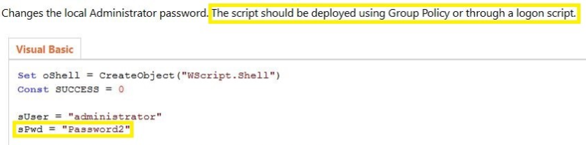
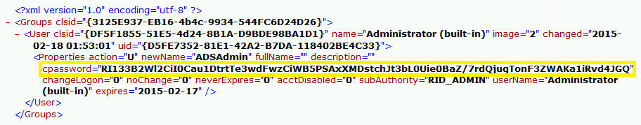
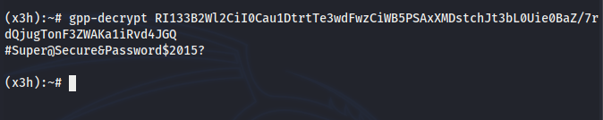

/$$ /$$$$$$ | $$ /$$$_ $$ /$$$$$$ /$$$$$$ /$$$$$$ /$$$$$$$ /$$$$$$ /$$$$$$ | $$$$$$$ | $$$$\ $$ /$$$$$$$ /$$$$$$ /$$__ $$ /$$__ $$ /$$__ $$/$$_____/ /$$__ $$ /$$__ $$| $$__ $$| $$ $$ $$| $$__ $$ /$$__ $$ | $$ \ $$| $$$$$$$$| $$ \__/ $$$$$$ | $$$$$$$$| $$ \ $$| $$ \ $$| $$\ $$$$| $$ \ $$| $$$$$$$$ | $$ | $$| $$_____/| $$ \____ $$| $$_____/| $$ | $$| $$ | $$| $$ \ $$$| $$ | $$| $$_____/ | $$$$$$$/| $$$$$$$| $$ /$$$$$$$/| $$$$$$$| $$$$$$$/| $$ | $$| $$$$$$/| $$ | $$| $$$$$$$ | $$____/ \_______/|__/ |_______/ \_______/| $$____/ |__/ |__/ \______/ |__/ |__/ \_______/ | $$ | $$ | $$ | $$ |__/ |__/ [Extraindo credenciais do GPP & GPO (Group Policies)] Antes de iniciar uma explicação de como a extração ocorre, vamos entender primeiro o que são os Group Policies... Basicamente, todos os computadores dentro de uma rede Windows possui uma conta de um Administrador com uma senha relativa ao mesmo. A alteração das senhas é um quesito de segurança dentro das organizações. Para isso, utilizam-se de um método padrão por meio de script's anexados na rede, que são, por sua vez, os Group Policies. Esses script's estão armazenados dentro de um diretório chamado SYSVOL, contendo todos os script's de logon com diversos dados do Group Policy, incluindo as credenciais do administrador, onde qualquer usuário incluso na rede consegue acessá-los. Sabendo disso, vamos falar sobre os diferentes Group Policies, que são, o GPP e o GPO. * GPO (Group Policy Object) O GPO, por sua vez, se torna mais raro devido ao fato de que as credenciais armazenadas dentro dos script's de logon são salvos em clear-text, sendo assim, não há nada que nos dificulte, como uma credencial criptografada e etc. Caso um controlador de domínio esteja usando o mesmo, podemos simplesmente, com qualquer usuário na rede, utilizar a ferramenta 'findstr' em busca de caracteres como: Pwd, Password, etc. Desta maneira: Desta maneira: > findstr /S /I password,pwd \\<DOMAIN>\SYSVOL\<DOMAIN>\Policies\* Que nos trará a credencial do Administrator em plain-text, como por exemplo, a credencial dentro do valor "sPwd", no script de logon mostrado abaixo:  Que, como podemos ver, um script de logon onde está uma credencial hardcoded, de um Adminstrator, com isso, você pode utilizar a credencial para acessar o restante da rede. * GPP (Group Policy Preferences) O GPP, que é algo mais usado pelos administradores, sendo que, quando usado, as senhas são armazenadas dentro dos script's de logon e criptografadas com AES-256. Eles foram aderidos pela Microsoft em 2006, que comprou o "PolicyMaker", do Desktop Standard, que foi renomeado e lançado com o Windows Server 2008, como "Group Policy Preferences". Sendo um recurso muito útil do GPP, a capacidade de armazenar e usar as credenciais em diversos cenários, dentre eles estão inclusos: ・ Map drives (Drives.xml) ・ Create Local Users ・ Data Sources (DataSources.xml) ・ Printer configuration (Printers.xml) ・ Create/Update Services (Services.xml) ・ Scheduled Tasks (ScheduledTasks.xml) ・ Change local Administrator passwords Quando um novo GPP é criado, há um desses arquivos XML associado e criado no diretório SYSVOL, onde as senhas são fornecidas/armazenadas em AES-256, como dito, para que agora, o armazenamento dessas credenciais sejam mais eficiente e dificulte a coleta de um invasor. Porém... Em 2012, a Microsoft publicou a chave privada do AES no MSDN, que pode ser usada para descriptografar a senha salva no script de logon. Dito isso, vamos a uma forma de nos aproveitar disso. Ref: https://docs.microsoft.com/en-us/openspecs/windows_protocols/ms-gppref/2c15cbf0-f086-4c74-8b70-1f2fa45dd4be?redirectedfrom=MSDN * Explorando o GPP Com acesso aos arquivos XML, podemos usar a chave privada do AES para descriptografar a senha armazenada nestes arquivos. Primeiro, iremos atrás da senha criptografada, que está dentro dos script's de logon, podemos filtrar o valor no qual contém a senha criptografada com AES, utilizando o 'findstr', novamente, da seguinte forma: > findstr /S /I cpassword \\<DOMAIN>\SYSVOL\<DOMAIN>\Policies\*.xml Que nos trará o seguinte resultado:  Agora, como temos tudo em mãos, basta descriptografar a senha GPP utilizando a chave privada do AES, existem vários script's automatizados para que póssamos realizar isso, dentre eles, temos uma ferramenta chamada 'gpp-decrypt', que vem incluso no Kali Linux, de forma simples, usaremos deste modo:  Tool: https://www.kali.org/tools/gpp-decrypt/ E então, teremos a senha descriptografada, para que póssamos usufruir disto para obtermos acesso ao restante da rede como administrador.$ by x3h $ for perseph0ne :>